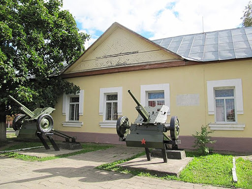

Зал «Великая Отечественная война»
Постоянная экспозиция, посвящённая военным действиям на территории Жлобинского района, а также нашим землякам - героям Великой Отечественной войны.
Вы увидите фотографии и личные вещи людей, знакомых Вам по названиям улиц нашего города, а также их боевых товарищей.
Большое количество экспонатов помогут Вам ненадолго окунуться в атмосферу того времени, когда каждый был готов сделать всё, чтобы приблизить победу, пусть даже ценой своей собственной жизни.
Часть экспозиции посвящена первому освобождению Жлобина войсками под командованием Леонида Григорьевича Петровского в июле 1941.
Это была часть смелой операции Советских войск под названием «Бобруйский котёл».
Большой интерес вызывают многочисленные документы и фотоматериалы, рассказывающие о боевых действиях воинов 63-го стрелкового корпуса 21-й армии и его командира Л.Г. Петровского. Светлая память об этом человеке живет сегодня среди жителей нашего города, его именем названа одна из улиц Жлобина.
Зал «Оккупация»
Экспозиция посвящена долгим, полным борьбы и потерь, годам оккупации.
Фотографии, документы, и личные вещи рассказывают об условиях, в которых жили и трудились мирные люди, о тяжёлой борьбе партизан, об ужасе концлагерей.
В музее хранится земля деревень, повторивших судьбу Хатыни. Их шесть. Сожженных дотла и не восстановленных: Залужье, Красновка, Октябрь, Братки, Грушка, Залесье.
Отдельный стенд посвящён Василию Ивановичу Козлову - уроженцу Жлобинского района, одному из главных организаторов партизанского движения в Белорусии, в последующем - Председателю Президиума Верховного Совета БССР.
Нельзя без волнения и человеческого сочувствия пройти мимо раздела, посвященного узникам концлагеря «Озаричи». Здесь хранятся воспоминания жлобинчанина Г.Г. Пархоменко, который в годы войны, малолетним вместе с матерью прошел этот печально-известный легерь смерти.
